Один MQTT-топик, две шкалы и два графика
Когда открываю комнатную панель, на шкалах нужны последние показания, а на графиках хочется видеть, как менялся воздух за полчаса. Датчик отдаёт оба числа одним сообщением. В ARAAMA для этого хватает двух тегов. У каждого своё поле JSON, своя единица и своя история.
Подключение · Температура · Влажность · Проверка четырёх карточек
1. Подключить планшет к брокеру
Понадобятся ARAAMA 0.1.10 на Android, компьютер с Python 3 и клиентом mosquitto_pub, а также MQTT-брокер, доступный обоим устройствам. Для опыта достаточно генератора. Архив с генератором и панелью RoomAir · Схема с ESP32 и DHT22
Для просмотра готовой панели экспортируйте свой открытый проект в Настройки → Проекты, затем откройте из архива RoomAir/panel.json. Четыре карточки уже на месте. Для ручной сборки начните на пустой вкладке учебного проекта.
Откройте Настройки → Сеть. В готовом проекте выберите Workshop broker, при ручной сборке нажмите + Подключение и дайте подключению это имя. Протокол — MQTT 3.1.1. Вместо broker.example введите адрес своего брокера без mqtt://. В этом примере брокер принимает обычный MQTT на порту 1883, TLS выключен. Для другого брокера укажите его порт, TLS и учётные данные. В учебной конфигурации повтор подключения — 5 с, Keepalive — 30 с, тайм-аут — 5000 мс. Нажмите Сохранить подключение.
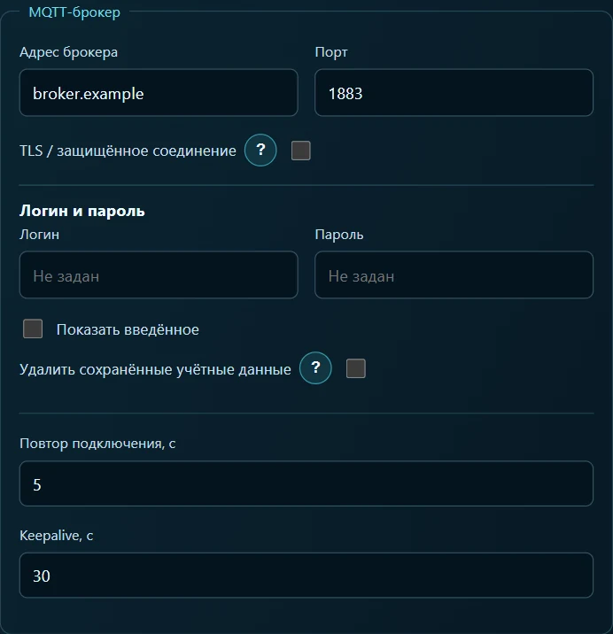
Распакуйте архив. Из папки, где лежит simulate.py, запустите команду ниже. Замените пример адреса на адрес того же брокера. Без параметра --host генератор печатает JSON только в терминал.
python simulate.py room --host 192.168.1.20 --port 1883
Каждые пять секунд в топик lab/room-air/state поступает сообщение. Для проверки откройте Настройки → Поиск MQTT, выберите Workshop broker, режим обычных топиков и введите фильтр lab/room-air/#. Нажмите Начать поиск и раскройте ветку lab → room-air → state. Внутри должны быть числа temperature_c и humidity_pct. Фильтр со знаком # используется при поиске. В тегах ниже указывается полный топик.
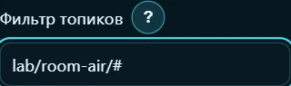
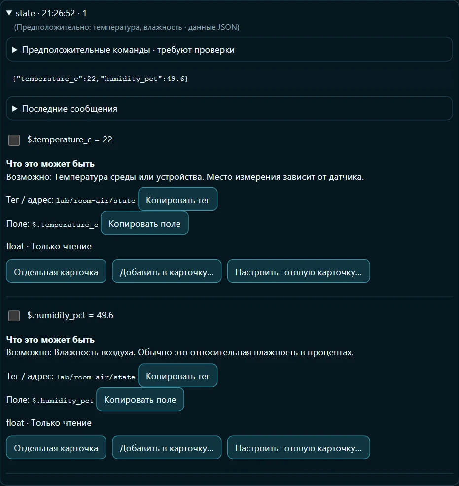
Раскройте сведения о найденном поле. Кнопка Копировать поле переносит в буфер его JSON-путь. Это удобно при заполнении тега вручную, особенно если у реального датчика путь длиннее. Ниже названия двух тегов даны на английском, как в файле RoomAir.
2. Температура воздуха
Тег. Откройте Настройки → Теги → + Тег. Название — Air temperature, подключение — Workshop broker, тип переменной — Float, доступ — Только чтение, единица — °C. В разделе получения данных введите топик lab/room-air/state, формат JSON, путь $.temperature_c. Число поступает уже в градусах: множитель 1, прибавить 0, устаревание 30 с. Нажмите Сохранить тег.
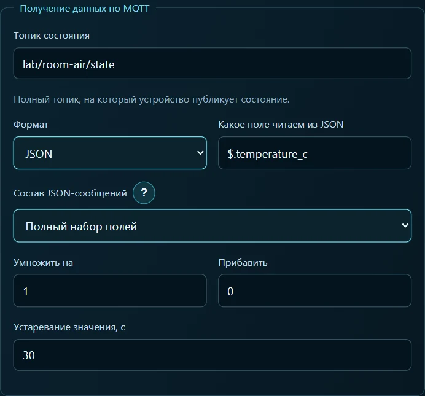
Карточка 1 — шкала. Внизу сохранённого тега, в разделе Использование на экранах, выберите Аналоговый прибор и нажмите Создать карточку этого тега. Откройте параметры созданной карточки. Оставьте название Air temperature. В разделе Шкала отображения введите Min 0, Max 40, единицу °C и 1 знак после запятой. Если появилась кнопка применения Min/Max, нажмите её. При входящем значении 22 шкала должна показывать 22 °C.
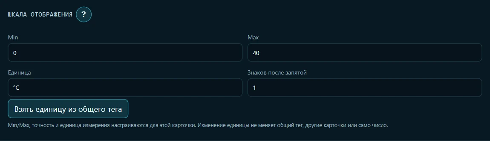
Чтобы получить вид как на готовой панели, в параметрах прибора выберите тему экрана Неон, голубой цвет карточки и вид Градиентная дуга. Тема применяется ко всему экрану. Цвет и циферблат выбираются у конкретной карточки.
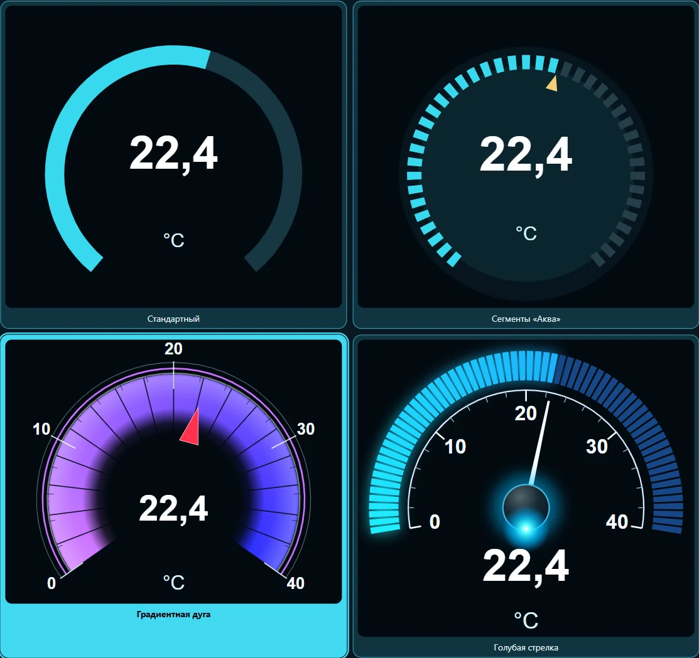
Карточка 2 — график. Вернитесь в Теги → Air temperature → Использование на экранах. Выберите Тренд и нажмите Создать карточку этого тега. В параметрах карточки задайте название Air temperature history. В разделе График на карточке → Период и запись выберите Свой период, введите 0,5 часа (30 минут). Для записи выберите При изменении. Чтобы график сохранялся между запусками Android, включите соответствующий флажок и нажмите Сохранить.
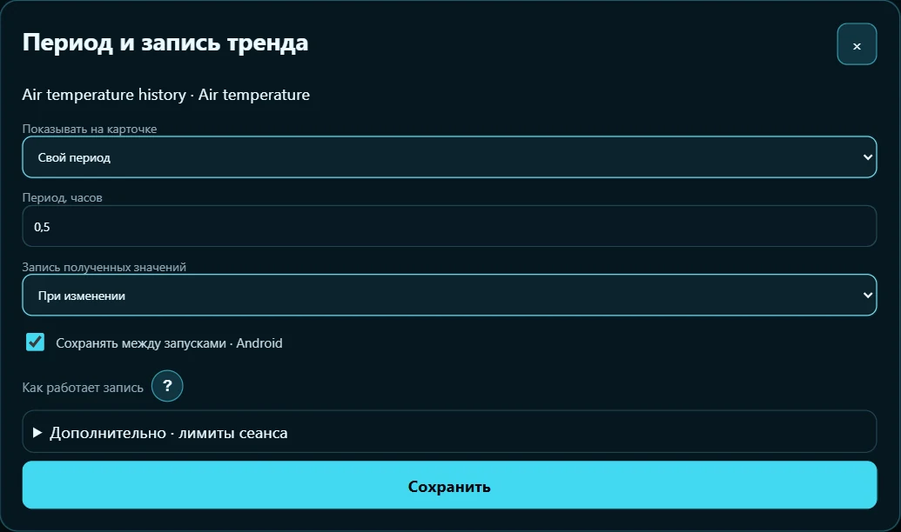
История температуры. В Теги → История измерений выберите Air temperature в верхнем списке. Включите Записывать историю, выберите При изменении, укажите 24 часа и 500 точек. Нажмите Сохранить политику. Лимиты относятся к истории тега в сеансе, а полчаса — к выбранному графику.
3. Относительная влажность
Тег. Нажмите Настройки → Теги → + Тег. Назовите его Relative humidity. Подключение — Workshop broker, тип — Float, доступ — Только чтение, единица — %. Введите топик lab/room-air/state, формат JSON и путь $.humidity_pct. Генератор передаёт проценты сразу: при входящем 49,6 на карточке должно быть 49,6 %. Для этого оставьте множитель 1, прибавить 0, устаревание 30 с. Нажмите Сохранить тег.
Карточка 3 — шкала. В теге Relative humidity откройте Использование на экранах. Выберите Аналоговый прибор → Создать карточку этого тега. В параметрах карточки оставьте название Relative humidity, раскройте Шкала отображения и задайте Min 0, Max 100, единицу %, 1 знак после запятой. Примените Min/Max, если приложение предлагает эту кнопку. Около 50 % стрелка будет в середине шкалы.

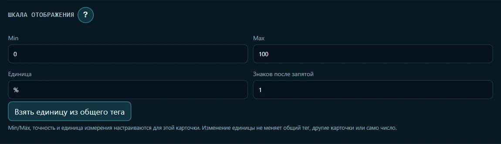
В параметрах прибора влажности выберите зелёный цвет карточки и вид Голубая стрелка. На готовом экране температурная шкала занимает левую половину первого ряда, а влажность — правую. В режиме настройки перетащите карточки на места, потяните за нижний угол для изменения размера. Два графика под шкалами растяните на всю ширину, сначала температурный, затем влажности.
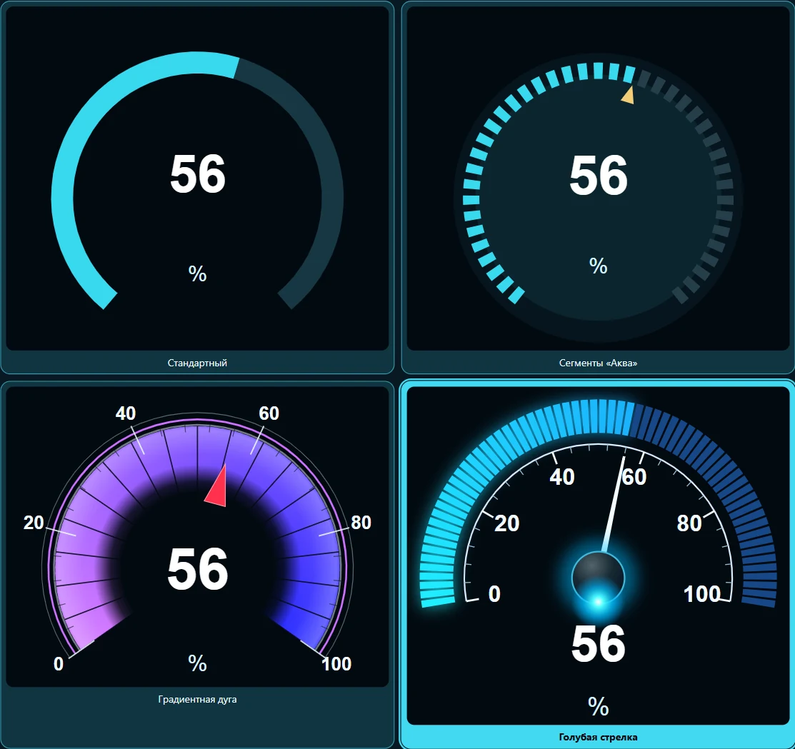
Карточка 4 — график. Вернитесь в Теги → Relative humidity → Использование на экранах, выберите Тренд и нажмите Создать карточку этого тега. Назовите график Relative humidity history. В его параметрах График на карточке → Период и запись выберите Свой период, укажите 0,5 часа, запись При изменении. Включите сохранение между запусками Android и нажмите Сохранить.

История влажности. В Теги → История измерений выберите Relative humidity. Включите Записывать историю, режим При изменении, срок 24 часа, максимум 500 точек. Нажмите Сохранить политику. Теперь изменение влажности попадёт на её график, даже если температура осталась прежней.
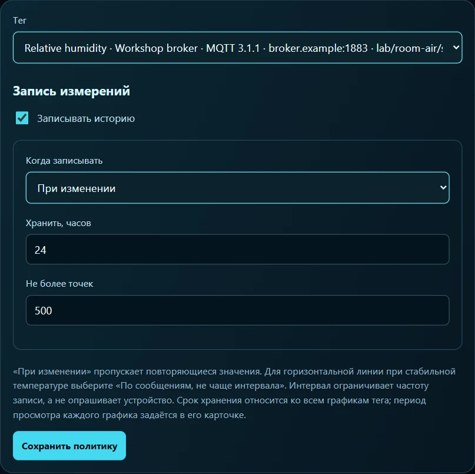
4. Проверить все четыре карточки
Нажмите Запуск. Первые два сообщения генератора удобно сверить с панелью:
| Время от запуска | Шкала температуры | Шкала влажности | Точек температуры / влажности в новом сеансе |
|---|---|---|---|
| 0 с | 22,0 °C | 49,6 % | 1 / 1 |
| 5 с | 22,0 °C | 49,4 % | 1 / 2 |
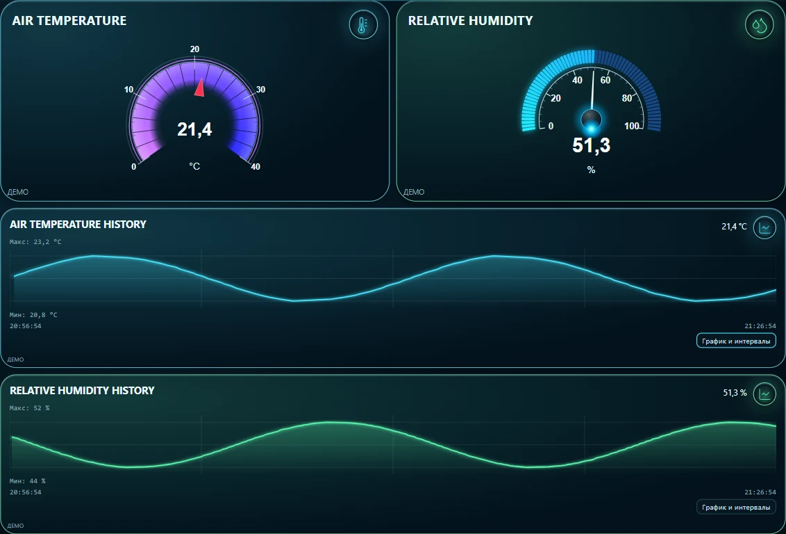
Для снимка в интерфейс передали 361 сообщение из генератора, ускорив время опыта. В истории температуры получилось 91 значение, в истории влажности — 266. Если обе шкалы показывают 22, проверьте путь у Relative humidity. Если влажность на шкале меняется, а её график пуст, проверьте тег самого тренда и включение записи именно у Relative humidity. Если показаний нет ни на одной карточке, сначала найдите свежее сообщение в Поиск MQTT.